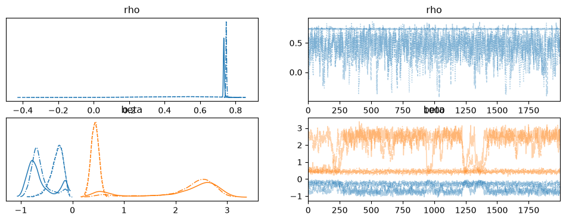
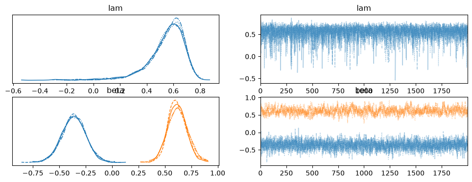

Spatial Logit Models¶
The spatial logit models extend binary logistic regression to include spatial dependence. bayespecon provides two structural-form models:
SAR-logit (
SARSpatialLogit): Spatial autoregressive lag on the latent log-odds, \(\eta = \rho W \eta + X\beta + \nu\), \(\nu \sim N(0, I)\)SEM-logit (
SEMSpatialLogit): Spatial error in the latent log-odds, \(\eta = X\beta + u\), \(u = \lambda W u + \nu\), \(\nu \sim N(0, I)\)
Both use Pólya–Gamma (PG) data augmentation for fully conjugate Gibbs updates. The logit link absorbs the error scale, so \(\sigma^2 = 1\) is fixed and does not appear as a free parameter. The PG shape parameter is always \(h = 1\) (one trial per observation).
Key difference from NegBin models: There is no NUTS path for spatial logit — only the PG-Gibbs sampler is available. This is because the PG augmentation makes all blocks (η, β, ρ/λ) conjugate or collapsed, giving much better mixing than NUTS for spatial binary outcomes.
For good recovery in a spatial logit model, you need n>~1k
SAR vs SEM Logit: When to Use Which¶
Criterion |
SAR-logit ( |
SEM-logit ( |
|---|---|---|
Model form |
\(\eta = \rho W \eta + X\beta + \nu\) |
\(\eta = X\beta + u\), \(u = \lambda W u + \nu\) |
Spatial effect |
Lag on latent log-odds (substantive) |
Error autocorrelation (nuisance) |
Interpretation |
\(\rho\) = spatial multiplier on log-odds |
\(\lambda\) = spatial error correlation |
Spillovers |
Yes — change in \(x_i\) affects \(y_j\) via \(W\) |
No — spillovers only through error |
Reduced form |
\(\eta = (I - \rho W)^{-1}(X\beta + \nu)\) |
\(\eta = X\beta + (I - \lambda W)^{-1}\nu\) |
Use when |
Spatial lag theory, substantive spillovers |
Spatial error as nuisance, LM-error significant |
Rule of thumb: Use SAR-logit when theory predicts spatial spillovers in the outcome (e.g., policy adoption diffuses across neighbours). Use SEM-logit when spatial correlation is a nuisance (e.g., unobserved area-level confounders induce spatial error).
import arviz as az
import numpy as np
from bayespecon.dgp import simulate_sar_logit, simulate_sem_logit
from bayespecon.models import SARLogit, SEMLogit
Generate SAR-Logit Data¶
We use simulate_sar_logit from bayespecon.dgp to generate synthetic binary data from a known SAR-logit process:
The DGP returns the true parameters, the latent field \(\eta\), and the binary response \(y\).
# Generate SAR-logit data on a 25x25 Queen grid (n=100)
data_sar = simulate_sar_logit(
n=30, # 25x25 grid → 625 observations
rho=0.5,
beta=np.array([-0.3, 0.5]), # intercept + 1 covariate
seed=42,
)
y_sar = data_sar["y"]
X_sar = data_sar["X"]
W_sar = data_sar["W_graph"]
print(f"n = {len(y_sar)}, k = {X_sar.shape[1]}")
print(f"y distribution: {int(y_sar.sum())} ones, {int(len(y_sar) - y_sar.sum())} zeros")
print(f"True params: {data_sar['params_true']}")
n = 900, k = 2
y distribution: 331 ones, 569 zeros
True params: {'rho': 0.5, 'beta': array([-0.3, 0.5])}
# Generate SAR-logit data on a 10x10 rook grid (n=100)
gdf = simulate_sar_logit(
n=45, # 10x10 grid → 100 observations
rho=0.5,
beta=np.array([-0.3, 0.5]), # intercept + 1 covariate
seed=42,
create_gdf=True,
)
Fit SAR-Logit with Pólya–Gamma Gibbs¶
The SARSpatialLogit model uses a 4-block PG Gibbs sampler:
ω | η — Pólya–Gamma augmentation (h = 1 for binary outcomes)
η | ω, ρ, β — Spatial-normal draw (σ² = 1)
β | η, ρ — Conjugate normal (σ² = 1)
ρ | β, ω, y — Collapsed 1-D slice (η integrated out)
Only ρ is non-conjugate, and it’s a scalar. The collapsed density integrates out η, avoiding the slow mixing that arises from conditioning on the current η draw.
model_sar_logit = SARLogit(y=y_sar, X=X_sar, W=W_sar)
idata_sar_logit = model_sar_logit.fit(
draws=2000,
tune=1000,
chains=4,
random_seed=42,
n_jobs=-1,
)
print("SAR-logit posterior means:")
print(f" rho = {float(idata_sar_logit.posterior['rho'].mean()):.4f} (true = 0.5)")
print(
f" beta = {idata_sar_logit.posterior['beta'].mean(dim=['chain', 'draw']).values} (true = [-0.3, 0.5])"
)
SAR-logit posterior means:
rho = 0.5862 (true = 0.5)
beta = [-0.46519164 1.29756161] (true = [-0.3, 0.5])
az.summary(idata_sar_logit)
| mean | sd | hdi_3% | hdi_97% | mcse_mean | mcse_sd | ess_bulk | ess_tail | r_hat | |
|---|---|---|---|---|---|---|---|---|---|
| rho | 0.586 | 0.217 | 0.144 | 0.773 | 0.078 | 0.014 | 7.0 | 181.0 | 1.92 |
| beta[x0] | -0.465 | 0.245 | -0.861 | -0.098 | 0.082 | 0.021 | 12.0 | 59.0 | 1.24 |
| beta[x1] | 1.298 | 1.002 | 0.288 | 2.811 | 0.436 | 0.062 | 7.0 | 104.0 | 1.61 |
az.plot_trace(idata_sar_logit)
array([[<Axes: title={'center': 'rho'}>, <Axes: title={'center': 'rho'}>],
[<Axes: title={'center': 'beta'}>,
<Axes: title={'center': 'beta'}>]], dtype=object)

Fit SEM-Logit with Pólya–Gamma Gibbs¶
The SEMSpatialLogit model uses the same 4-block PG Gibbs structure, but with λ (spatial error) instead of ρ (spatial lag):
The key difference from SAR-logit is in the collapsed density for λ: the SEM correction term \(-\frac{1}{2} X\beta^T A_\lambda^T A_\lambda X\beta\) depends on λ (unlike SAR where \(-\frac{1}{2} X\beta^T X\beta\) is constant in ρ), so it must be included in the slice sampler.
# Generate SEM-logit data
data_sem = simulate_sem_logit(
n=30,
lam=0.5,
beta=np.array([-0.3, 0.5]),
seed=42,
)
y_sem = data_sem["y"]
X_sem = data_sem["X"]
W_sem = data_sem["W_graph"]
print(f"n = {len(y_sem)}, k = {X_sem.shape[1]}")
print(f"y distribution: {int(y_sem.sum())} ones, {int(len(y_sem) - y_sem.sum())} zeros")
print(f"True params: {data_sem['params_true']}")
n = 900, k = 2
y distribution: 385 ones, 515 zeros
True params: {'lam': 0.5, 'beta': array([-0.3, 0.5])}
model_sem_logit = SEMLogit(y=y_sem, X=X_sem, W=W_sem)
idata_sem_logit = model_sem_logit.fit(
draws=2000,
tune=1000,
chains=4,
random_seed=42,
n_jobs=-1,
)
print("SEM-logit posterior means:")
print(f" lam = {float(idata_sem_logit.posterior['lam'].mean()):.4f} (true = 0.5)")
print(
f" beta = {idata_sem_logit.posterior['beta'].mean(dim=['chain', 'draw']).values} (true = [-0.3, 0.5])"
)
/home/runner/micromamba/envs/test/lib/python3.14/site-packages/rich/live.py:260: UserWarning: install "ipywidgets"
for Jupyter support
warnings.warn('install "ipywidgets" for Jupyter support')
Sampling 4 chains for 1000 tune and 2000 draw iterations, 4 x 3,000 draws total took 248s (48 draws/s)
SEM-logit posterior means:
lam = 0.5464 (true = 0.5)
beta = [-0.36180176 0.62014906] (true = [-0.3, 0.5])
az.summary(idata_sem_logit, var_names=["lam", "beta"])
| mean | sd | hdi_3% | hdi_97% | mcse_mean | mcse_sd | ess_bulk | ess_tail | r_hat | |
|---|---|---|---|---|---|---|---|---|---|
| lam | 0.546 | 0.143 | 0.291 | 0.758 | 0.003 | 0.003 | 3269.0 | 3833.0 | 1.00 |
| beta[x0] | -0.362 | 0.114 | -0.572 | -0.141 | 0.002 | 0.001 | 2538.0 | 4757.0 | 1.00 |
| beta[x1] | 0.620 | 0.092 | 0.450 | 0.793 | 0.004 | 0.002 | 579.0 | 1191.0 | 1.01 |
az.plot_trace(idata_sem_logit)
array([[<Axes: title={'center': 'lam'}>, <Axes: title={'center': 'lam'}>],
[<Axes: title={'center': 'beta'}>,
<Axes: title={'center': 'beta'}>]], dtype=object)

Gibbs Backend Options for Logit Models¶
Both SARSpatialLogit and SEMSpatialLogit support the same three Gibbs backends as the NegBin models:
Backend |
|
ρ/λ update |
η solve |
Requires |
|---|---|---|---|---|
CHOLMOD |
|
Adaptive slice |
CHOLMOD factorisation |
scikit-sparse |
SPLU |
|
Adaptive slice |
|
SciPy only |
JAX dense |
|
Slice (Neal stepping-out) |
JAX dense Cholesky |
JAX |
The auto-selection logic is the same as for NegBin: CHOLMOD → JAX (if n ≤ 10,000) → SPLU.
Note: There is no NUTS path for spatial logit models. The PG-Gibbs sampler is the only estimation method, because the PG augmentation makes all blocks conjugate or collapsed, giving much better ESS/s than NUTS for spatial binary outcomes.
Fitted Probabilities¶
Both logit models provide fitted_probabilities() which returns \(P(y_i = 1) = \text{logit}^{-1}(\hat{\eta}_i)\) at the posterior mean:
SAR-logit: \(\hat{\eta} = (I - \hat{\rho} W)^{-1} X\hat{\beta}\) (reduced form includes spatial multiplier)
SEM-logit: \(\hat{\eta} = X\hat{\beta}\) (spatial error affects variance, not mean)
# SAR-logit fitted probabilities (include spatial multiplier)
probs_sar = model_sar_logit.fitted_probabilities()
print(
f"SAR-logit fitted probs: mean = {probs_sar.mean():.3f}, range = [{probs_sar.min():.3f}, {probs_sar.max():.3f}]"
)
# SEM-logit fitted probabilities (spatial error affects variance, not mean)
probs_sem = model_sem_logit.fitted_probabilities()
print(
f"SEM-logit fitted probs: mean = {probs_sem.mean():.3f}, range = [{probs_sem.min():.3f}, {probs_sem.max():.3f}]"
)
SAR-logit fitted probs: mean = 0.290, range = [0.002, 0.970]
SEM-logit fitted probs: mean = 0.411, range = [0.100, 0.833]
ArviZ Diagnostics and Model Comparison¶
Both SARSpatialLogit and SEMSpatialLogit produce az.InferenceData with posterior, log_likelihood, and observed_data groups. All ArviZ diagnostics work seamlessly. Since σ² = 1 is fixed in logit models, it does not appear in the posterior.
# ArviZ diagnostics work with logit InferenceData
print("SAR-logit groups:", idata_sar_logit.groups())
print()
# LOO cross-validation
loo_sar = az.loo(idata_sar_logit)
print(f"SAR-logit LOO: elpd = {loo_sar.elpd_loo:.2f}, SE = {loo_sar.se:.2f}")
print()
# WAIC
waic_sar = az.waic(idata_sar_logit)
print(f"SAR-logit WAIC: elpd = {waic_sar.elpd_waic:.2f}, SE = {waic_sar.se:.2f}")
print()
# Compare SAR vs SEM logit
loo_sem = az.loo(idata_sem_logit)
waic_sem = az.waic(idata_sem_logit)
print(f"SEM-logit LOO: elpd = {loo_sem.elpd_loo:.2f}, SE = {loo_sem.se:.2f}")
print(f"SEM-logit WAIC: elpd = {waic_sem.elpd_waic:.2f}, SE = {waic_sem.se:.2f}")
SAR-logit groups: ['posterior', 'log_likelihood', 'observed_data']
SAR-logit LOO: elpd = -5531.50, SE = 242.04
SAR-logit WAIC: elpd = -15984.45, SE = 782.94
SEM-logit LOO: elpd = -586.61, SE = 8.89
SEM-logit WAIC: elpd = -580.59, SE = 8.79
/home/runner/micromamba/envs/test/lib/python3.14/site-packages/arviz/stats/stats.py:1042: RuntimeWarning: overflow encountered in exp
weights = 1 / np.exp(len_scale - len_scale[:, None]).sum(axis=1)
/home/runner/micromamba/envs/test/lib/python3.14/site-packages/numpy/_core/_methods.py:49: RuntimeWarning: overflow encountered in reduce
return umr_sum(a, axis, dtype, out, keepdims, initial, where)
/home/runner/micromamba/envs/test/lib/python3.14/site-packages/arviz/stats/stats.py:782: UserWarning: Estimated shape parameter of Pareto distribution is greater than 0.70 for one or more samples. You should consider using a more robust model, this is because importance sampling is less likely to work well if the marginal posterior and LOO posterior are very different. This is more likely to happen with a non-robust model and highly influential observations.
warnings.warn(
/home/runner/micromamba/envs/test/lib/python3.14/site-packages/arviz/stats/stats.py:1652: UserWarning: For one or more samples the posterior variance of the log predictive densities exceeds 0.4. This could be indication of WAIC starting to fail.
See http://arxiv.org/abs/1507.04544 for details
warnings.warn(
/home/runner/micromamba/envs/test/lib/python3.14/site-packages/arviz/stats/stats.py:1652: UserWarning: For one or more samples the posterior variance of the log predictive densities exceeds 0.4. This could be indication of WAIC starting to fail.
See http://arxiv.org/abs/1507.04544 for details
warnings.warn(
az.plot_trace(idata_sar_logit, var_names=["rho", "beta"])
array([[<Axes: title={'center': 'rho'}>, <Axes: title={'center': 'rho'}>],
[<Axes: title={'center': 'beta'}>,
<Axes: title={'center': 'beta'}>]], dtype=object)